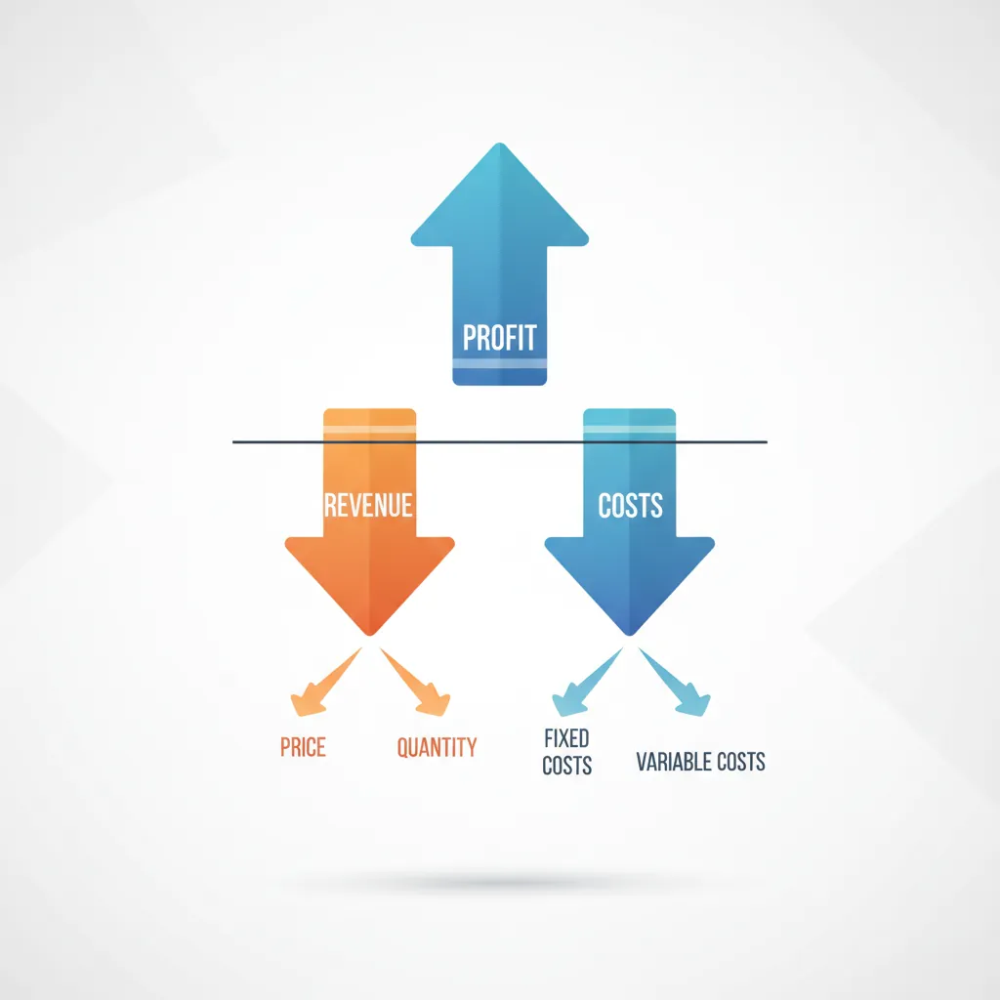
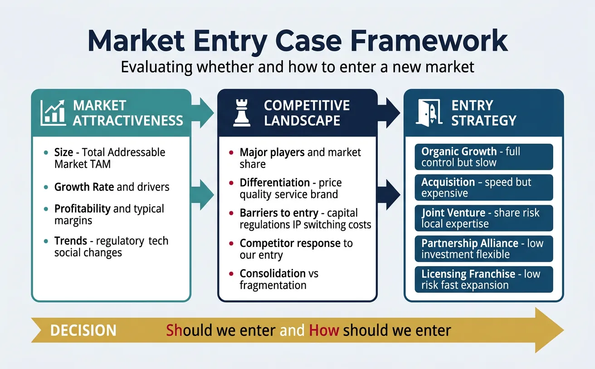
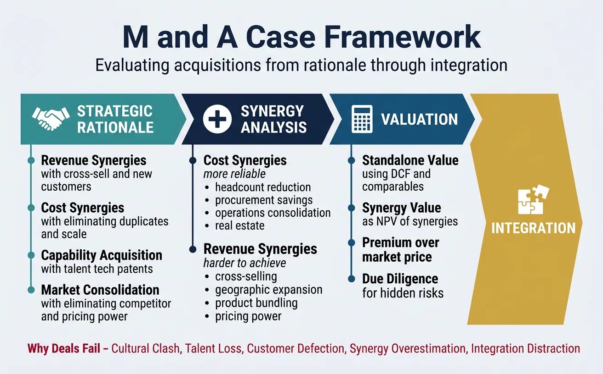
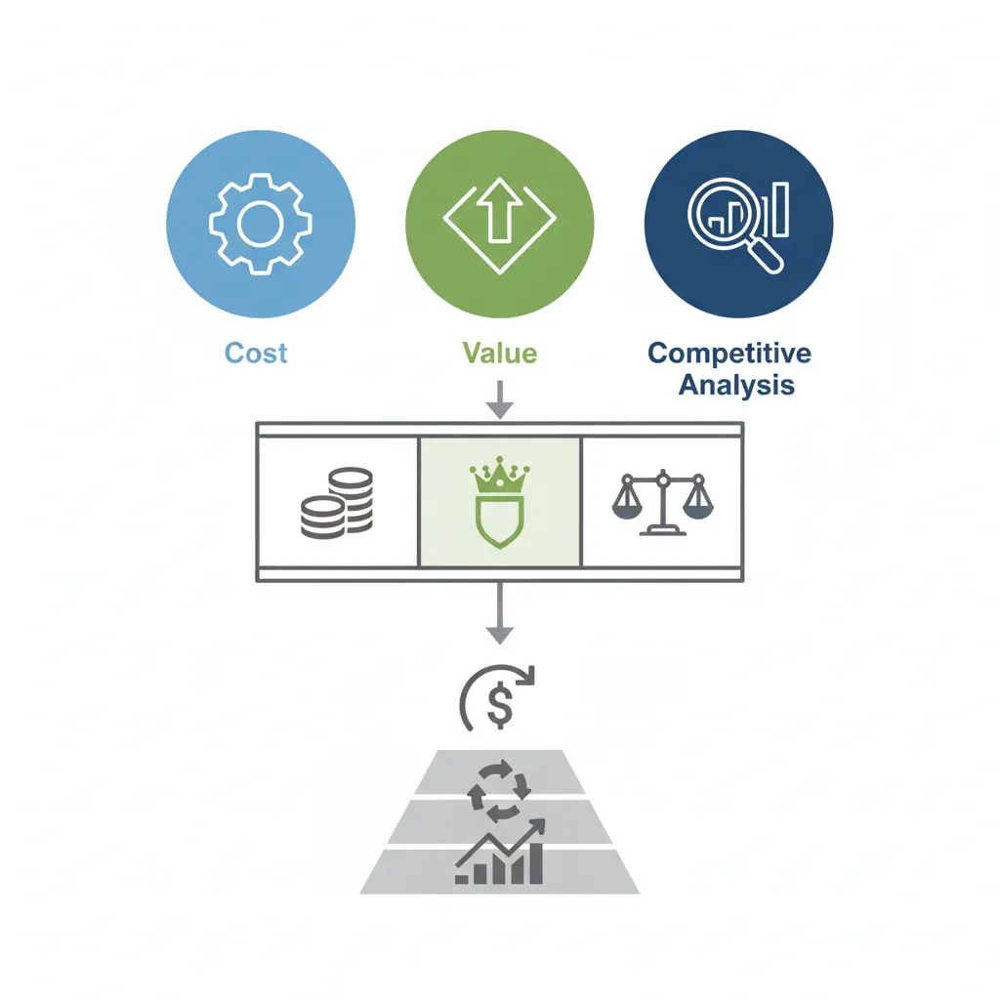

Business Strategy
Structured Problem Solving
Hypothesis-driven thinking, problem structuring, root cause analysisMECE & Issue Trees
Mutually exclusive, collectively exhaustive, logic treesStrategy Frameworks
Porter's Five Forces, SWOT, BCG Matrix, value chainMcKinsey 7S & Organizational Analysis
Structure, strategy, systems, shared values, skillsFinancial Due Diligence
Financial statements, valuation, M&A analysis, modelingClient Communication & Delivery
Pyramid principle, slide design, stakeholder managementAdvanced Frameworks (Bonus)
Blue ocean, disruption theory, scenario planningCase Interview Master Pack
Market sizing, profitability, M&A, pricing casesConsultant Toolkit (Bonus)
Templates, checklists, presentation frameworksKey Insight
Case interviews test how you think, not just what you know. Mastering profitability, market entry, M&A, pricing, and operations frameworks gives you the structured thinking tools to crack any case. Practice with real scenarios to build pattern recognition and confidence.
1. Case Interview Basics
Case interviews are business problem-solving simulations used by consulting firms, tech companies, and investment banks to assess candidates' analytical and communication skills.
What Interviewers Test
| Competency | What They're Looking For | How to Demonstrate |
|---|---|---|
| Structured Thinking | Ability to break complex problems into logical parts | Present MECE frameworks; walk through logic step-by-step |
| Analytical Skills | Quantitative reasoning and data interpretation | Perform mental math; draw insights from numbers |
| Business Judgment | Common sense and practical recommendations | Consider implementation; anticipate objections |
| Communication | Clear, concise articulation of ideas | Lead with answer; use signposting; synthesize at end |
| Presence | Confidence without arrogance; client-ready demeanor | Make eye contact; stay calm under pressure; be personable |
Common Case Types
Case Type Distribution at Top Firms
CASE TYPE │ FREQUENCY │ COMPLEXITY │ KEY FRAMEWORKS ───────────────────────┼───────────┼────────────┼──────────────────────── Profitability │ 35% │ Medium │ Profit tree, Revenue/Cost Market Entry │ 25% │ High │ 4Cs, Porter's, Entry modes M&A / Due Diligence │ 15% │ High │ Synergies, Valuation, Integration Pricing │ 10% │ Medium │ Cost-plus, Value-based, Competitive Operations │ 10% │ Medium │ Supply chain, Capacity, Process Digital/Growth │ 5% │ Varies │ Digital strategy, Growth levers
Structuring Your Approach
The universal case interview approach:
- Listen & Clarify: Take notes, repeat problem, ask 2-3 clarifying questions
- Take Time: "Can I take 60 seconds to structure my approach?"
- Present Framework: State your structure upfront; explain why it's relevant
- Dive Deep: Work through each bucket systematically
- Synthesize: Summarize findings and give a recommendation
Common Pitfall
Don't memorize frameworks and force-fit them. Customize your structure to the specific question. Interviewers can tell when you're applying a cookie-cutter approach.
Structure a case interview with a clear framework, hypotheses, and analysis plan. Download as Word or PDF.
All data stays in your browser. Nothing is sent to or stored on any server.
2. Profitability Case Framework
Profitability cases are the most common type. The client's profits are declining or below target, and you need to diagnose the cause and recommend solutions.

Profit Tree Breakdown
Profitability Framework
PROFIT
│
┌────────────────┴────────────────┐
▼ ▼
REVENUE COSTS
│ │
┌─────────┴─────────┐ ┌────────┴────────┐
▼ ▼ ▼ ▼
PRICE × VOLUME FIXED VARIABLE
│ COSTS COSTS
┌───────┴───────┐ │ │
▼ ▼ ├─ Rent ├─ Materials
# Customers × # Units ├─ Salaries ├─ Labor
per Customer ├─ Depreciation ├─ Shipping
└─ Marketing └─ Commissions
Revenue Drivers
When investigating revenue decline:
| Driver | Diagnostic Questions |
|---|---|
| Price | Have we changed pricing? How do we compare to competitors? Are we discounting more? |
| Volume | Is overall market growing or shrinking? Are we gaining or losing share? |
| Mix | Has product mix shifted? Are we selling more low-margin products? |
| Customers | Are we losing customers? Is customer acquisition slowing? Is churn increasing? |
Cost Drivers
When investigating cost increases:
| Cost Type | Key Questions |
|---|---|
| Fixed Costs | Have we expanded capacity? Added overhead? Increased marketing spend? |
| Variable Costs | Has input cost changed? Are we less efficient? More waste/defects? |
| Labor | Have wages increased? Are we overstaffed? Is productivity declining? |
Example Case
Practice Case: Coffee Chain
Prompt: "Our client is a regional coffee chain with 50 locations. Profits have dropped 20% over the past year despite revenue staying flat. What's going on?"
Approach:
- Since revenue is flat, the problem is likely cost-driven
- Segment costs: COGS, labor, rent, marketing, overhead
- Compare year-over-year by category
- If labor costs spiked, investigate wages, headcount, productivity
3. Market Entry Framework
Market entry cases ask whether a company should enter a new market—geographically, with a new product, or into a new segment.

Market Attractiveness
First, assess whether the market is worth entering:
- Size: What's the total addressable market (TAM)? How is it measured?
- Growth: Is the market growing? At what rate? What's driving growth?
- Profitability: What are typical margins in this market?
- Trends: Any regulatory, technological, or social changes affecting the market?
Competitive Landscape
Understand who you're competing against:
Competitive Analysis Questions
- Who are the major players? What's their market share?
- How do competitors differentiate? (Price, quality, service, brand)
- Are there barriers to entry? (Capital, regulations, IP, switching costs)
- How might competitors respond to our entry?
- Where is the market consolidating or fragmenting?
Entry Strategy Options
| Entry Mode | Pros | Cons | Best When... |
|---|---|---|---|
| Organic Growth | Full control; preserve culture | Slow; high risk; no instant scale | Time available; strong capabilities |
| Acquisition | Speed; immediate market share | Expensive; integration risk | Need speed; target available |
| Joint Venture | Share risk; access local expertise | Less control; partner conflicts | New geography; regulatory requirements |
| Partnership/Alliance | Low investment; flexibility | Limited control; dependent on partner | Testing market; complementary skills |
| Licensing/Franchise | Low risk; fast expansion | Less control over quality | Strong brand; replicable model |
Example Case
Practice Case: Fitness Chain Expansion
Prompt: "Our client is a premium fitness chain in the US. They want to know if they should expand to Germany. What would you advise?"
Approach:
- Assess German fitness market: size, growth, trends (boutique vs big-box)
- Analyze competition: Who dominates? What's their positioning?
- Evaluate client's capabilities: Do they have international experience? Strong brand?
- Compare entry modes: Acquisition vs organic vs partnership
- Build business case: Investment required, timeline to profitability, key risks
4. M&A Case Framework
M&A cases test whether a company should acquire a target, at what price, and how to integrate it successfully.

Strategic Rationale
Why would the client pursue this acquisition?
| Rationale Type | Examples |
|---|---|
| Revenue Synergies | Cross-sell products; access new customers; enter new markets |
| Cost Synergies | Eliminate duplicate functions; economies of scale; procurement savings |
| Capability Acquisition | Acquire talent; technology; patents; know-how |
| Market Consolidation | Eliminate competitor; gain pricing power; defensive move |
Synergy Analysis
Quantify the value creation potential:
Synergy Categories
COST SYNERGIES (typically more reliable) ├── Headcount reduction: Eliminate duplicate roles (HR, Finance, IT) ├── Procurement: Combine purchasing for volume discounts ├── Operations: Consolidate manufacturing, distribution └── Real estate: Close redundant offices/facilities REVENUE SYNERGIES (typically harder to achieve) ├── Cross-selling: Sell target's products to acquirer's customers ├── Geographic expansion: Access new markets via target ├── Product bundling: Create combined offerings └── Pricing power: Raise prices after consolidation
Valuation & Due Diligence
Key questions for valuation:
- Standalone Value: What is the target worth on its own? (DCF, comparables)
- Synergy Value: What's the NPV of synergies?
- Premium: What premium over market price is appropriate?
- Due Diligence: Any hidden risks? (Legal, financial, operational)
Integration Risks
Why M&A Deals Fail
- Cultural Clash: Different work styles, values, decision-making
- Talent Loss: Key people leave during uncertainty
- Customer Defection: Service disruption or confusion drives churn
- Synergy Overestimation: Revenue synergies especially hard to capture
- Integration Distraction: Core business suffers while focusing on merger
5. Pricing Case Framework
Pricing cases ask you to determine the optimal price for a new product or evaluate a pricing change.

Cost-Plus Pricing
Start with your cost base and add a margin:
- Calculate Total Cost: Fixed costs + Variable costs per unit
- Add Target Margin: Cost × (1 + margin %)
- Limitation: Ignores what customers are willing to pay
Value-Based Pricing
Price based on customer value perception:
Value-Based Pricing Approach
1. IDENTIFY NEXT-BEST ALTERNATIVE What would customer buy if your product didn't exist? → Reference price baseline 2. QUANTIFY DIFFERENTIATION VALUE What benefits does your product provide over alternative? → Time savings × Value of time → Cost savings (direct) → Revenue increase (indirect) → Risk reduction 3. CALCULATE VALUE-BASED PRICE Reference Price + Value of Differentiation 4. CAPTURE FAIR SHARE You typically capture 20-50% of value created (Customer keeps rest as incentive to switch)
Competitor-Based Pricing
Position relative to competition:
- Premium: Price above competitors (quality, brand justification)
- Parity: Match competitor pricing (compete on other factors)
- Penetration: Price below to gain share (scale economics)
Example Case
Practice Case: SaaS Pricing
Prompt: "Our client is launching a new project management SaaS tool. How should they price it?"
Approach:
- Identify target segment and their alternatives (Asana, Monday, Trello)
- Calculate value delivered: time saved per user × wage × users
- Benchmark competitor pricing ($10-25/user/month)
- Consider pricing model: per-user, tiered, freemium
- Recommend: $15/user/month with freemium trial (capture 30% of value)
6. Operations Case Framework
Operations cases focus on improving efficiency, reducing costs, or solving supply chain problems.
Supply Chain Optimization
Key areas to investigate:
- Procurement: Supplier selection, contract terms, inventory management
- Manufacturing: Capacity utilization, yield rates, quality control
- Distribution: Warehouse locations, transportation modes, delivery times
- Inventory: Safety stock levels, carrying costs, stockout rates
Capacity Planning
When demand exceeds capacity or capacity exceeds demand:
| Scenario | Options |
|---|---|
| Capacity Shortage | Add shifts; outsource; expand facilities; improve throughput; manage demand |
| Excess Capacity | Reduce headcount; consolidate facilities; find new customers; diversify products |
Process Improvement
Key metrics and levers:
- Cycle Time: Time from start to finish of process
- Throughput: Units produced per time period
- Utilization: Actual output ÷ Maximum possible output
- Yield: Good units ÷ Total units produced
- Bottleneck: The process step limiting overall throughput
Bottleneck Principle
The system's throughput is limited by its bottleneck. Improving any non-bottleneck step doesn't increase overall output. Always identify and address the constraint first.
7. Digital Transformation Cases
Digital transformation cases address how companies should leverage technology to improve operations, customer experience, or business models.
Digital Strategy
Framework for digital transformation:
- Digitize Core: Automate existing processes for efficiency
- Enhance Customer Experience: Digital channels, personalization, self-service
- Enable New Business Models: Platform plays, data monetization, digital products
Technology Selection
Key questions when evaluating technology:
- Does it integrate with existing systems?
- Build vs. buy vs. partner decision?
- What's the implementation timeline and cost?
- What capabilities/talent do we need?
Change Roadmap
Sequence transformation initiatives:
- Quick Wins: High impact, low effort changes to build momentum
- Foundation: Infrastructure and capability building
- Transformation: Major process and business model changes
- Optimization: Continuous improvement and scaling
8. Conclusion & Practice Tips
Case Interview Success Formula
- Structure First: Never dive into analysis without a framework
- Customize: Adapt frameworks to the specific situation
- Be Hypothesis-Driven: State what you expect to find before investigating
- Do the Math: Quantify whenever possible; show your work
- Synthesize: Always end with a clear recommendation
- Practice: Do 50+ cases before your interviews
In the final article, we'll cover the essential tools every consultant needs: Excel mastery, PowerPoint best practices, SQL basics, and project management skills.